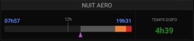

🌙
Nuit aéronautique
Crépuscule civil · temps disponible avant la nuit
NUMNGT · numérique (50%-1L)

Possibilités
- Visualise la fenêtre de jour VFR sur un axe temporel 0h–24h UTC.
- Gradient horizontal : gris très foncé aux extrémités (nuit) vers blanc au centre (midi solaire), avec arrondi aux coins. Reflète l'alternance jour/nuit du jour courant.
- Curseur heure courante : cercle orange avec bordure noire, positionné sur le gradient à la position de l'heure UTC actuelle.
- Trait 12h : repère vertical qui dépasse au-dessus du gradient, avec le label "12h" positionné au-dessus.
- Horaires crépuscule civil (aube et crépuscule) affichés en bleu, en heure locale, espacés en dessous du gradient.
- Temps disponible avant la nuit VFR (côté droit) :
- Vert : ≥ 90 minutes
- Orange : entre 30 et 90 minutes
- Rouge : moins de 30 minutes
- Gris / tiret : nuit en cours ou position GPS indisponible
- Calcul solaire mis à jour toutes les 30 secondes à partir de la position GPS courante.
- Pastille de titre "NUIT AERO" affichée en haut (masquable via Options ▸ « Masquer le titre »).
Gestes
– Appui long : —
·· Double-tap : —
Note
- Le calcul utilise le crépuscule civil (soleil à −6° sous l'horizon) conformément à la réglementation VFR française.
- Les horaires affichés sont en heure locale ; l'axe temporel du gradient est en UTC.
- Sans position GPS, le gradient est affiché en gris uniforme et le temps disponible est masqué.